27_player_stopped.pngPlayer, stopped
27_player_stopped.pngPlayer, stopped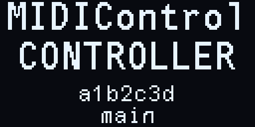
01_splash.pngSplash after power-on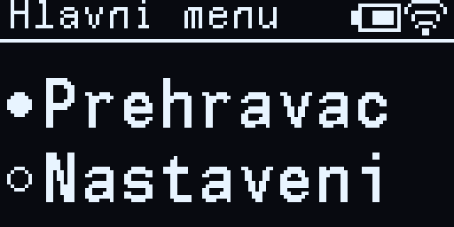
02_main_player.pngMain menu, Prehravac selected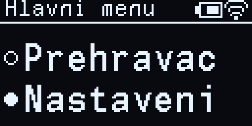
03_main_settings.pngMain menu, Nastaveni selected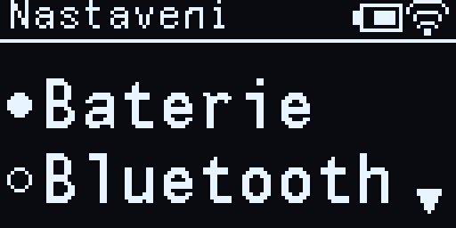
04_settings_battery.pngSettings: Baterie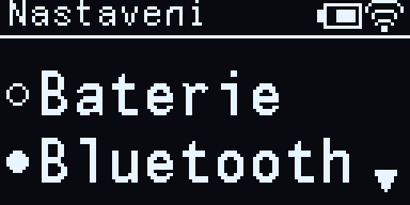
05_settings_bluetooth.pngSettings: Bluetooth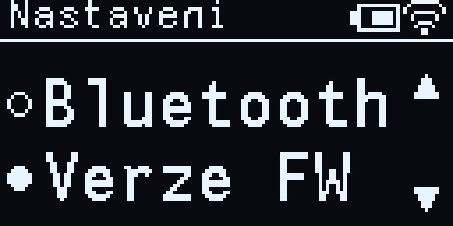
06_settings_firmware.pngSettings: Verze FW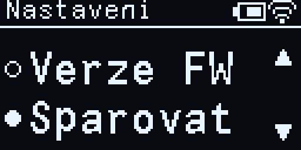
07_settings_pair_base.pngSettings: Sparovat zakl. (pair a base)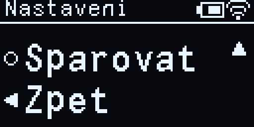
08_settings_back.pngSettings: Zpet (back)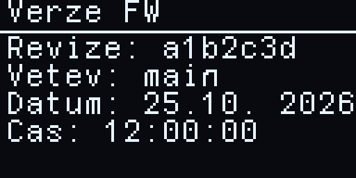
09_info_firmware.pngFirmware info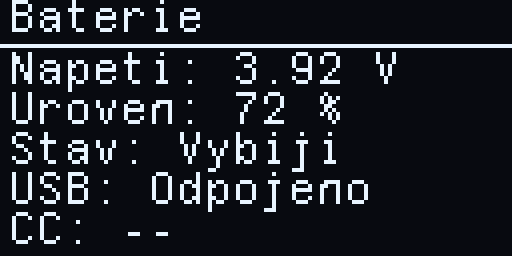
10_info_battery.pngBattery info, on battery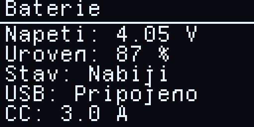
11_info_battery_charging.pngBattery info, charging from USB-C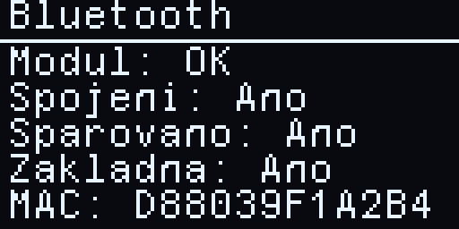
12_info_bluetooth.pngBluetooth info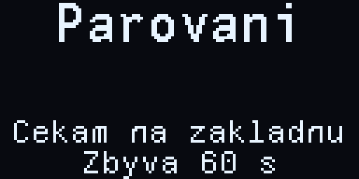
13_pair_base_waiting.pngPairing window open, waiting for a base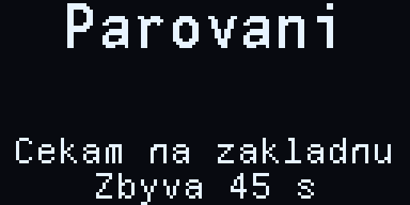
14_pair_base_countdown.pngPairing window, 45 s left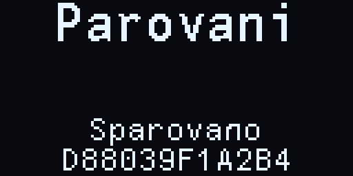
15_pair_base_paired.pngPairing window: base paired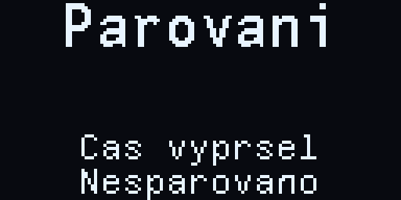
16_pair_base_expired.pngPairing window: time ran out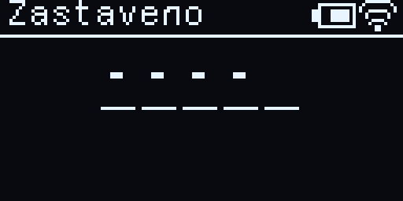
17_player_idle.pngPlayer, idle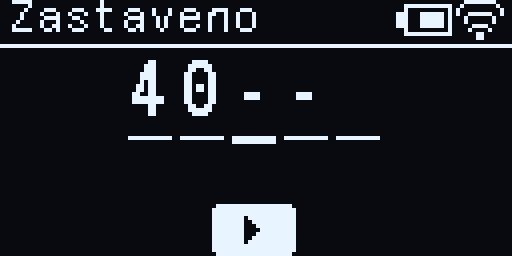
18_player_entry.pngPlayer, entering a code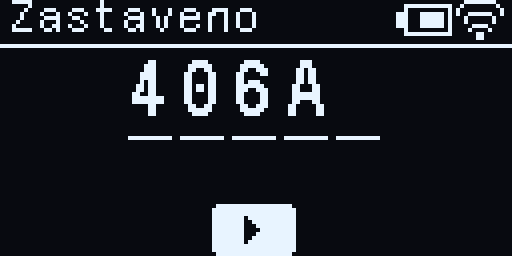
19_player_entry_letter.pngPlayer, code with a letter (Up/Down)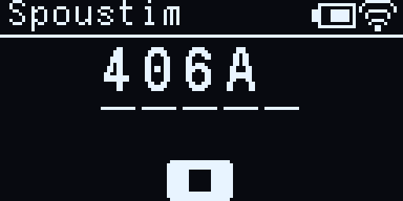
20_player_starting.pngPlayer, waiting for the PC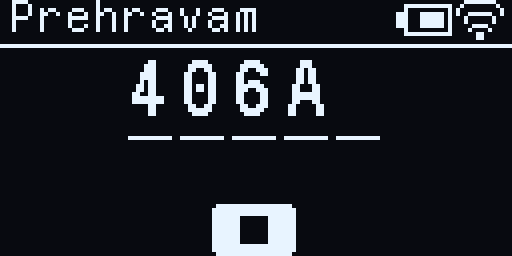
21_player_playing.pngPlayer, playing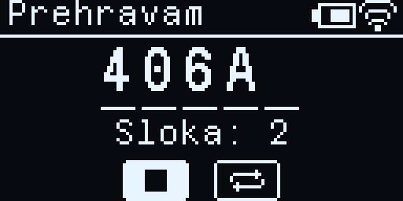
22_player_anchor.pngPlayer, playing, section from the PC (Stop selected)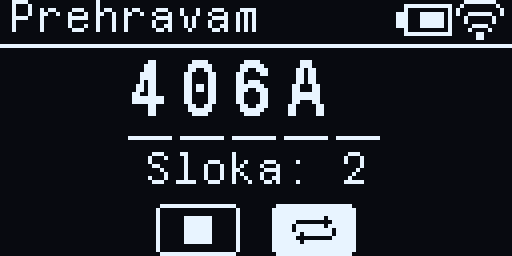
23_player_repeat_selected.pngPlayer, Repeat selected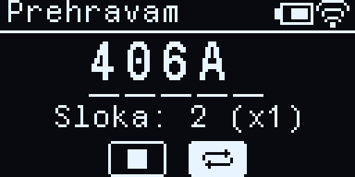
24_player_add_verse.pngPlayer, verse added: one repeat left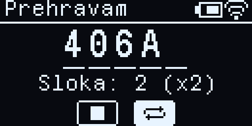
25_player_add_verse_2.pngPlayer, verse added twice: two repeats left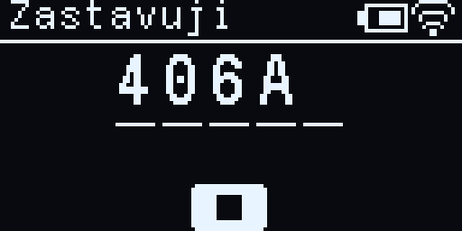
26_player_stopping.pngPlayer, stopping27_player_stopped.pngPlayer, stopped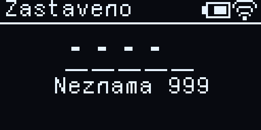
28_player_unknown.pngPlayer, unknown code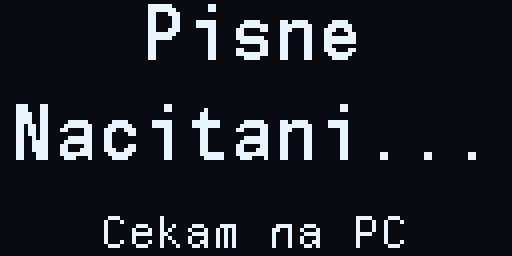
29_songs_loading.pngSong list, loading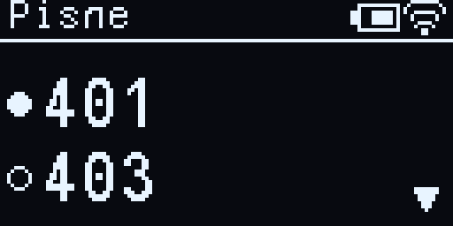
30_songs_first.pngSong list, first entry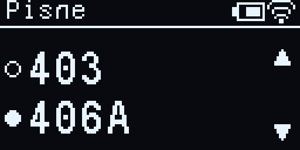
31_songs_middle.pngSong list, middle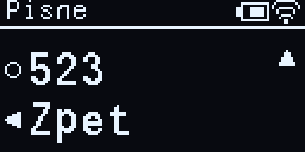
32_songs_last.pngSong list, end of the list 33_songs_page_more.pngSong list, end of a page, next page follows
33_songs_page_more.pngSong list, end of a page, next page follows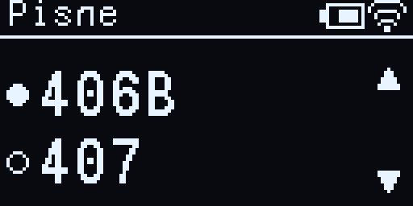
34_songs_page_two.pngSong list, first entry of page 2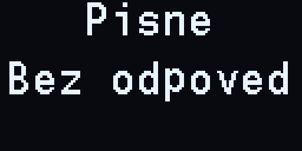
35_songs_error.pngSong list, PC does not answer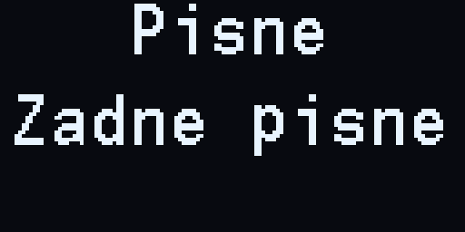
36_songs_empty.pngSong list, empty folder 37_pairing.pngPairing passkey
37_pairing.pngPairing passkey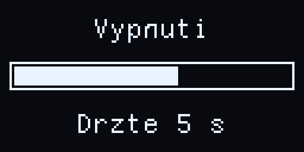
38_power_hold.pngON/OFF held, shutdown progress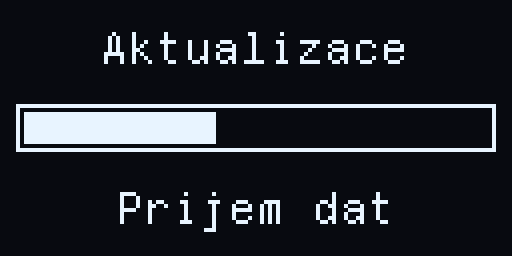
39_fw_update.pngFirmware update, receiving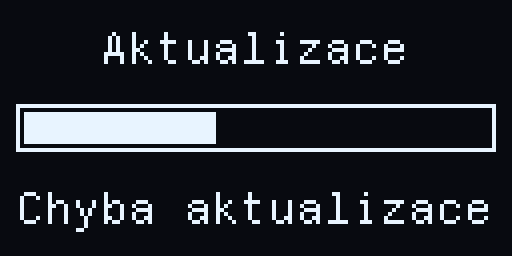
40_fw_update_failed.pngFirmware update, failed 41_no_base.pngBase not reachable: overlay over the main menu
41_no_base.pngBase not reachable: overlay over the main menu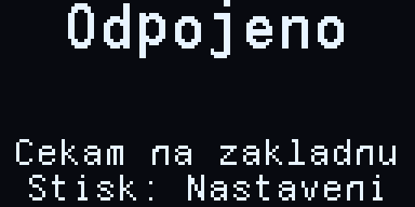
42_no_base_back_ignored.pngBase not reachable: Back does nothing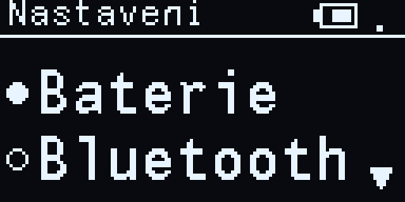
43_no_base_settings.pngBase not reachable: Nastaveni opened from the overlay 44_no_base_back.pngBase not reachable: Zpet returns to the overlay
44_no_base_back.pngBase not reachable: Zpet returns to the overlay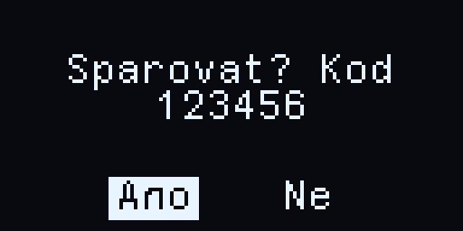
45_no_base_pairing.pngBase not reachable: pairing passkey above the overlay 46_no_pc.pngBase reachable, PC not connected: overlay
46_no_pc.pngBase reachable, PC not connected: overlay 47_base_back.pngBase and PC reachable again: main menu
47_base_back.pngBase and PC reachable again: main menu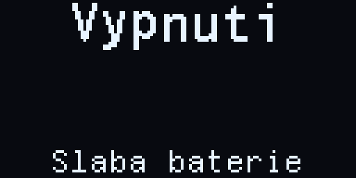
48_message_low_battery.pngLow-battery shutdown message